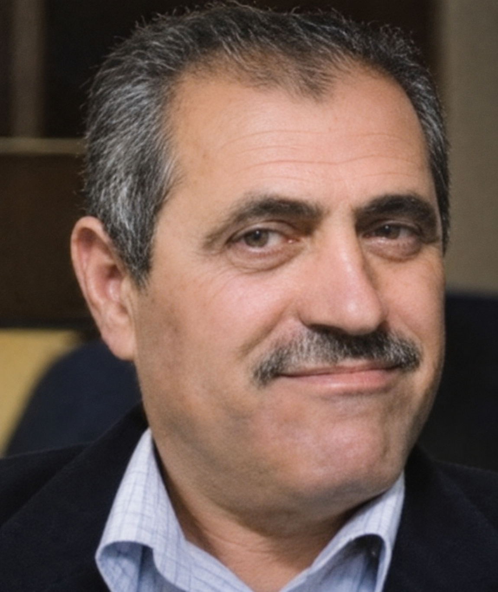

بِسْمِ اللهِ الرَّحْمٰنِ الرَّحِيمِ
صدقة جارية
عن روح السيد فتحي قاسم الدقة
✦
اللهم اغفر له وارحمه، وأنر قبره، واجعل الفردوس الأعلى مستقره.
إجمالي التسبيحات المنجزة
٠
تقبّل الله منكم صالح الأعمال
دُعَاءٌ وَرَجَاءٌ
أدعية للسيد فتحي قاسم الدقة رحمه الله
اللهم اجعلها دعواتٍ تصل إليه رحمةً ونورًا